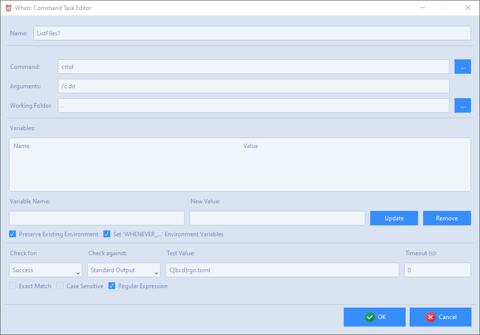
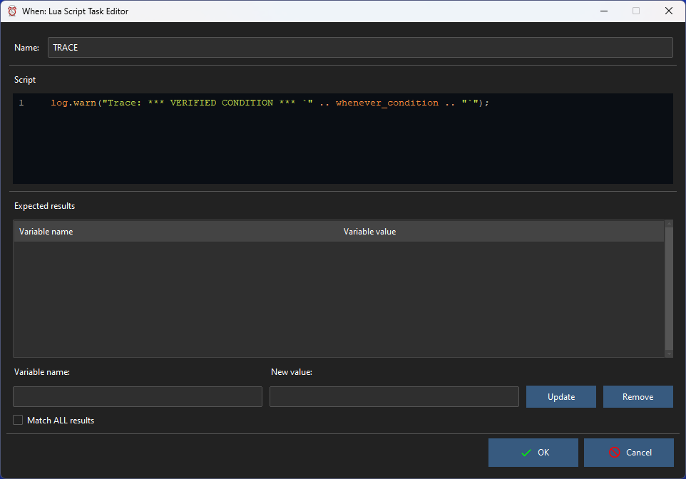

Native Tasks Editors
There are two types of base task implemented in When which correspond to tasks natively supported by the underlying scheduler:
Command based
Lua Script based
Other, specific tasks may be added - which actually are specialized versions of the above mentioned ones.
In all editors, the task Name is mandatory and must be an alphanumeric string beginning with a letter or an underscore.[1]
Command
Command tasks execute a command at the OS level which can be any kind of executable, that is, both scripts and binaries are accepted commands. The command, along with its arguments and startup folder, must be provided by the user.

The definition of the related command and of the tests that are performed to determine its outcome is very similar to the corresponding condition definition.
Apart from the mandatory name, the following entries must be specified:
Command: must either be the full path to an executable, or a command that can be found in the current execution PATH
Arguments: the arguments, if any, to be passed to the command
Working Folder: the directory where the command is started by the OS.
If the working folder is not important for command execution, a simple dot (.) can be entered to specify the “current folder”: the field can not be empty.
The environment variables deserve special consideration:
by checking Preserve Existing Environment (default, recommended) the command starts with all the already defined variables, otherwise a fresh, empty environment is created
the Set… flag, if checked, adds two more variables: WHENEVER_TASK holding the current task name, and WHENEVER_CONDITION containing the name of the condition that triggered the task itself
more environment variables can be defined for the specific command: for this, it is sufficient to enter the variable name and the value in the respective fields, and click the Update button; to remove a variable it is sufficient to enter its name in the Variable Name field (or double click the entry in the list) and then click the Remove button. Clicking Update by providing a new value for an existing variable will update its value in the list.
Variables provided in the list will add up to the existing ones, or overwrite the ones that share the same name.
The Checks section allows to test the outcome of commands by examining their output (either stdout or stderr) or the exit code. When selecting Success in the Check for drop down list, meeting the criteria provided on the right will be considered a success. Selecting Failure will cause the same event to be considered a failure. This especially counts when instructing conditions to stop task execution after either success or failure (see the specific page). When Nothing is selected, the outcome of the task will always be undetermined. In the same section, the flags below change the way the provided result is compared against the selected output (stdout or stderr only: ignored when the exit code is considered): Exact Match indicates that the output is matched against the provided string in its entirety (by default it is sufficient to find the provided string as a substring), Case Sensitive obviously considers uppercase and lowercase letters differently, while Regular Expression considers the provided string as a regular expression to match against the command output, either in its entirety or just partially depending on whether Exact Match is respectively checked or unchecked.
The Timeout parameter can be set to a specified number of seconds in order to force a command which can hang or take a long time to complete to stop after the provided time. In terms of outcome, a timeout terminated command is always considered as failed. The provided value must be a positive integer, to avoid timeout checking field must be left empty.
Lua Script
As a lightweight alternative to OS level commands, it is possible to run Lua scripts: since the Lua interpreter is embedded in the scheduler executable, execution of simple Lua scripts may have less impact on computational resources than equivalent tasks that require commands. The interpreter is provided with its full library, and although the script has to be specified in the scheduler configuration, it is possible to use the require() and dofile() functions to call external scripts.

Success and failure of Lua based tasks are determined by the correspondence of the values held by some variables after the script execution. The variables to be checked are provided by the user by entering the variable name and the expected value respectively in the Variable Name and New Value fields, and clicking the Update button: the behavior of the list, the aforementioned fields and the Update and Remove buttons are similar to the ones seen for the environment variables in command based tasks. Checking the Match ALL Results box will cause the task to be successful only when all listed variables hold the expected values, while by default just one match among the listed ones is sufficient for success.
Attention
Lua script based tasks will always fail if there is an error in the provided script.